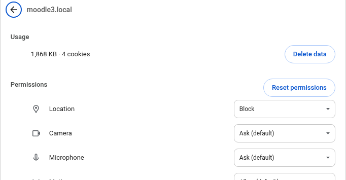

Start with these checks
- Open the game in a current browser using the normal HTTPS Moodle address. Avoid an embedded browser inside another app if it suppresses permission prompts.
- Check that the device has internet access and that location services are enabled in the operating system.
- Open the browser’s site settings for Moodle and allow Location and, for QR stages, Camera.
- Reload the game after changing permissions. If the issue remains, close and reopen the browser tab.

The map cannot locate me
Allow precise location when offered. Move outdoors or away from heavy roofs and walls, wait for a GPS fix, then try again. Indoors, GPS may remain inaccurate even with permission; ask your teacher about a QR stage or a map-marking alternative. A teacher-defined polygon must be large enough for normal GPS uncertainty.
The QR scanner is blank or blocked
Verify the camera is not in use by another app. Check both the browser’s Moodle-site permission and the phone’s operating-system permission. Choose the rear camera, improve light and hold the code steady. If you previously denied access, change the setting manually and reload.
Where to change permissions
Check Android Settings → Apps → your browser → Permissions for Location and Camera. Then open Moodle in Chrome, tap the site icon beside the address, open site settings and allow both permissions. Names differ between Android versions.
In iOS Settings → Privacy & Security → Location Services, enable location services and permit Safari. Check Settings → Safari → Camera or the per-website controls in Safari for camera access. Reload the Moodle page after any change.
Use the lock or site-control icon in the address bar to inspect Moodle’s Location and Camera permissions. Desktop location can be approximate; if the activity allows it, use map marking instead of GPS.
Other common issues
- No team assigned: ask your teacher to place you in the correct Moodle group and grouping.
- Position rejected: move closer to the intended area, wait for a better location fix or verify the right road is selected.
- Map remains blank: test the network connection, disable restrictive browser extensions and retry the standard map viewer.
- 3D viewer is slow: use a supported browser/device or ask the teacher to switch to the standard player.